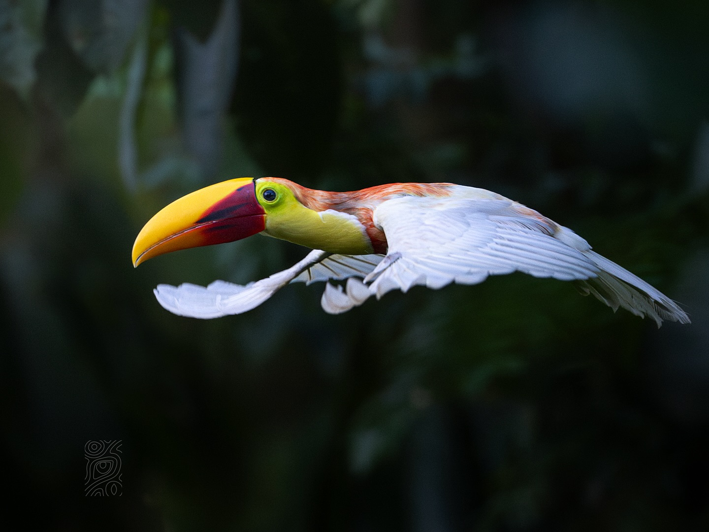

The toco toucan (Ramphastos toco) is a species of bird in the toucan family Ramphastidae. It is the largest species of toucan and has a distinctive appearance, with a black body, a white throat, chest and uppertail-coverts, and red undertail-coverts. Its most conspicuous feature is its huge beak, which is yellow-orange with a black base and large spot on the tip. It is endemic to South America, where it has a wide distribution from the Guianas south to northern Argentina and Uruguay, and its range has recently been expanding southwards. Unlike other toucans, which inhabit continuous forests, toco toucans inhabit a variety of semi-open habitats at altitudes of up to 1,750 m (5,740 ft). They are especially common in the Brazilian cerrado, gallery forests, and the wetlands of the Pantanal.
Toco toucans mainly feed on fleshy fruits, but also supplement their diets with insects, eggs, and the nestlings of other birds. They will eat any available sugar-rich fruits, and show a high level of variation in their diet depending on the surrounding habitat. Breeding is seasonal, with the timing of the breeding season differing between regions. Nests are usually made in hollows in trees and contain two to four eggs; both parents incubate the eggs for 17–18 days before hatching. It is considered to be of Least Concern by BirdLife International.
Toco toucans are the largest species of toucan, with an average length of 56 cm (22 in). They cannot be mistaken for any other birds and are easily recognized by their large orange beaks. The body is mainly glossy black, with a white throat and upper throat. This white patch will sometimes have a citrine yellow tint and a red band where it meets the black breast, but these features are highly variable between individuals. The rump is white, while the underside of the tail, including the crissum, is red. The eye is brown (although it has also been reported as being varying shades of yellow, green, and blue), and is surrounded by a narrow blue ring, with the rest of the orbital skin being sulfur yellow to orange. A small patch of feathers near the lores is white and the orbital skin below the eye is sometimes greenish-yellow.
| Average Bill Size | 200.5 mm (7.89 in) in males and 178.6 mm (7.03 in) in females | |

The toco toucan is endemic to South America, where it has a wide distribution from the Guianas south to northern Argentina and Uruguay. In the northern portion of its range, it has several disjunct populations, including in the Guianas, in northern Brazil near the Rio Branco, and along the mouth of the Amazon upstream to around Manaus in eastern Amazonas. It is further found from coastal Maranhão southwest to southwestern Brazil, Bolivia, and Pampas de Heath in far southeastern Peru, and south through Piauí and Bahia to northern Argentina and Uruguay. It was previously thought to have gone extinct in Tucumán in northwestern Argentina by the late 1990s, but was rediscovered there in the early 2010s. The species's range in the Amazon rainforest may be increasing due to deforestation. Similarly, it has only been recorded from Uruguay recently; previously, the southward limit of its range was Lagoa dos Patos in Brazil. The recent expansion its range south of the 30th parallel may be caused by escapes of captive individuals or changes in ecological conditions. Toco toucans are generally resident, but will sometimes move en masse in search of food.
Because it prefers open habitats, the toco toucan is likely to benefit from the widespread deforestation in tropical South America; it is known to inhabit areas around airports and newly-made roads. It has a large range and except in the outer regions of its range, it is typically fairly common. It is therefore considered to be of Least Concern by BirdLife International. Toco toucans are hunted for their meat and for the pet trade; the large flocks it forms after the breeding season were previously known to be hunted heavily for meat, with their bills being kept as a souvenir. The impact of hunting on the population is unknown. A 2023 study of the wildlife trade in toucans found that toco toucans were the second most commonly traded species over a period from 1975 to 2018. They were exported from a greater range of Latin American countries than other toucans and were the most expensive, with an average retail price of US$12,450 in 2020 (equivalent to $15,490 in 2025) and some specimens fetching up to $13,400 (equivalent to $16,700 in 2025).
Toco toucans are one of the best-known Neotropical birds, both internationally and domestically within their range. They are also the best-represented species of toucan on the internet, internationally and within Brazil. The toucan is an object of ridicule in Brazilian legend. According to one story, the birds accepted him as their king after seeing the size of his bill while he was hidden inside a hole; after he came out, the birds mocked him for being "nothing but nose". In the mythology of the Ayoreo people of the Gran Chaco of Bolivia and Paraguay, the word for toco toucan, Carai, is also the name of a honey hunter. The toco toucan was part of one of the most famous ad campaigns for Guinness, an Irish brand of stout. The toucan is the symbol of the centre-right Brazilian Social Democracy Party.